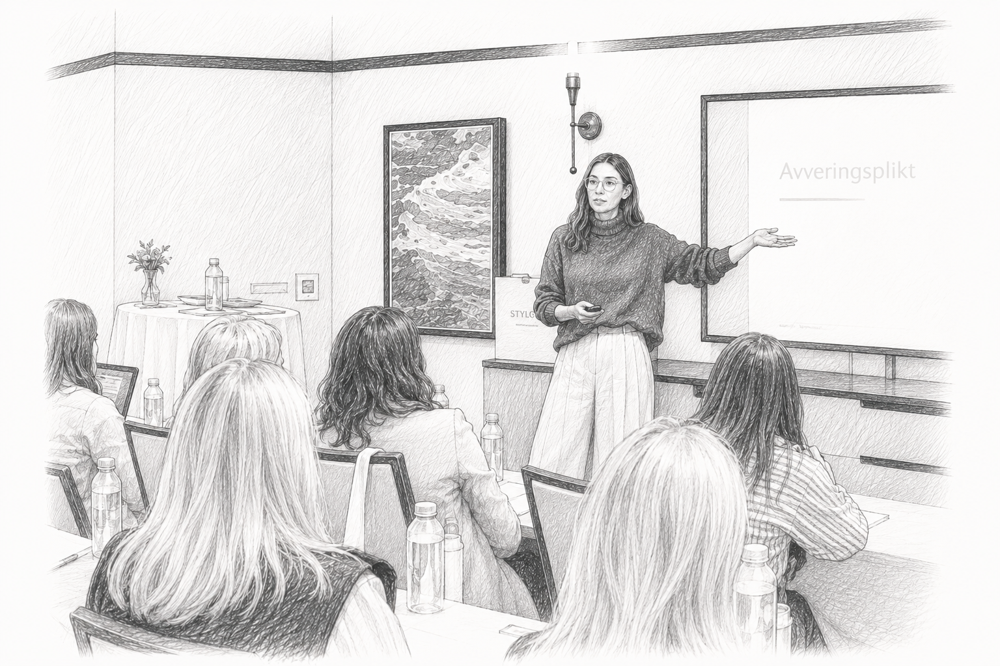
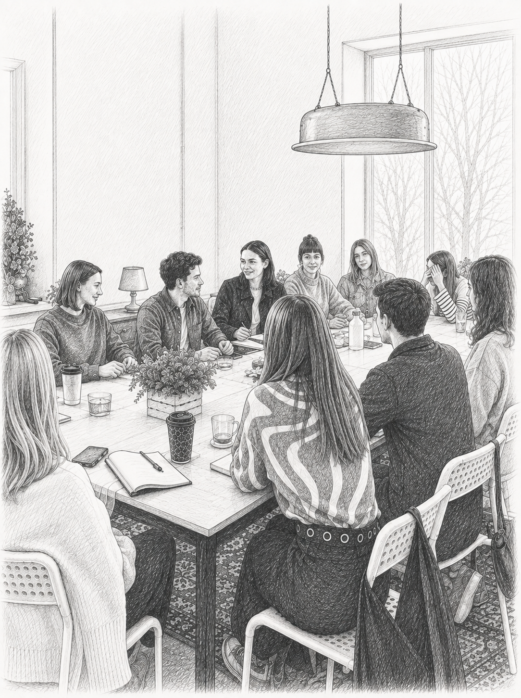
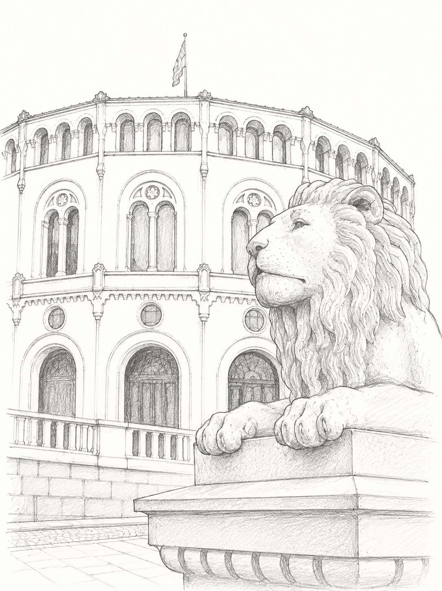

01
Kunnskap
Fenomenforståelse, forskning, analyse og faglig formidling. Voldsformene, mønsteret av tvang og kontroll, hvem som rammes, og hvorfor det kan være vanskelig å bryte ut av en voldsrelasjon.
Se InnsiktVår misjon
Voldsavsnittet arbeider for å styrke samfunnets evne til å forebygge, avdekke og begrense konsekvensene av vold mot særlig utsatte personer og vold i nære relasjoner. Vi arbeider i skjæringspunktet mellom fenomenforståelse, juss, praksis og systemforbedring.
Offentlig ansvar
Er ansatte i din kommune trygge på forskjellen mellom varslingsplikt og avvergingsplikt?
Kommunen og kommunens ansatte har plikt til å forebygge, avdekke og avverge vold og overgrep. Den enkelte ansatte har meldeplikt til barnevernet, og avvergingsplikt etter straffeloven § 196. Pliktene går foran taushetsplikten, men de utløses på ulike vilkår og krever ulike reaksjoner.
Riksrevisjonen
Har funnet at offentlig ansatte er usikre på forholdet mellom taushetsplikt og avvergingsplikt, og på når avvergingsplikten gjelder.
Norges institusjon for menneskerettigheter
Peker på at reglene er vanskelig tilgjengelige for tjenestene, og at taushetsplikten ofte tolkes strengere enn det er rettslig grunnlag for.
Kurs er ett virkemiddel blant flere. Arbeidet henger sammen: kunnskap gir grunnlag for kompetanse, og praksis gir grunnlag for systemendring.
01
Fenomenforståelse, forskning, analyse og faglig formidling. Voldsformene, mønsteret av tvang og kontroll, hvem som rammes, og hvorfor det kan være vanskelig å bryte ut av en voldsrelasjon.
Se Innsikt02
Kurs, foredrag, kompetanseprogrammer og praktiske verktøy. Kursene holdes som åpne kurs, og lokalt for én eller flere kommuner.
Se kurs03
Rettspolitisk arbeid, høringsinnspill og analyser for bedre forebygging og avverging. Svikten oppstår oftest i overgangen mellom tjenester, ikke inne i den enkelte.
Se RettspolitikkSituasjonene under er de tjenestene faktisk står i. Voldsavsnittet arbeider med hver av dem.
Bekymring
Adgangen til å drøfte anonymt har ingen terskel.
Meldeplikt
Meldeplikten til barnevernet utløses ved «grunn til å tro».
Avvergingsplikt
Straffeloven § 196. Krever at man holder det for «sikkert eller mest sannsynlig» at handlingen er eller vil bli begått.
Taushetsplikt
Pliktene går foran taushetsplikten, men de utløses på ulike vilkår og krever ulike reaksjoner.
Opplysningsplikt
Hva plikten krever, og hvordan den skiller seg fra de øvrige pliktene, gjennomgås konkret.
Dokumentasjon
Malverket strukturerer hva den ansatte har sett. Det konkluderer ikke om risiko.
Risikovurdering
Ingen av pliktene krever bevis. Vurderingen skal gjøres før noe er avklart.
Varsling
Hvem som skal varsles i hvilken situasjon: barnevern, helsetjeneste, politi, krisesenter, NAV og boligkontor.
Overlevering
Kan kommunen dokumentere at en bekymringsmelding ble mottatt, journalført og tildelt en saksbehandler? Etter kommuneloven § 25-1 er det kommunens eget ansvar å kunne svare på det.
Lokalt kurs · For kommuner
Voldsavsnittet kan holde kurset om forebygging og avverging av vold lokalt for én eller flere kommuner — som 2-dagerskurs, dagskurs eller skreddersydd opplegg etter avtale.
Analyser, fagartikler, høringsinnspill og rettspolitiske forslag publiseres her. Området er under oppbygging.
{{ p.aar }}
{{ p.tittel }}
{{ p.type }}
Fagmiljø
Tilknytningen til Omsorgsjuss gir Voldsavsnittet juridisk fundament og institusjonell forankring. Fagavdelingen har sitt eget mandat: å styrke tjenestenes evne til å forebygge, avdekke og avverge vold.
Om ossKompetanse
Kursene retter seg mot ansatte og ledere i kommunal sektor og i virksomheter som utfører kommunale oppgaver. De holdes som åpne kurs, og lokalt for én eller flere kommuner.

Åpne kurs
Lokale kurs
2-dagerskurs, dagskurs eller skreddersydd opplegg etter avtale — for én eller flere kommuner. Skreddersøm kan blant annet være relevant ved implementering av TryggEst eller arbeid med konkrete problemstillinger innen forebygging.
{{ kurs.excerpt }}
{{ para }}
{{ para }}
{{ kurs.prerequisites }}
{{ rad.time }}
{{ rad.text }}
Det kan komme endringer i programmet.
{{ k.name }}
{{ k.role }}
{{ note }}
{{ kurs.price }} · {{ kurs.location }}
For kommuner
Voldsavsnittet kan holde kurset om forebygging og avverging av vold lokalt for én eller flere kommuner. Kurset er særlig nyttig når ansatte fra flere tjenester i samme kommune deltar sammen.

For å gi et best mulig tilbud til din kommune kan vi skreddersy kurs ut fra din kommunes behov. Etter kurset sitter kommunen igjen med ansatte som kjenner forskjellen mellom varslingsplikt og avvergingsplikt, vet hva de skal gjøre når de blir bekymret.
Kontakt oss på 458 89 056 eller {{ kontaktEpostVis }}.
2-dagerskurs
106 000 kr
To kursholdere. Fullt kursopplegg over to dager. I tillegg til det som er beskrevet i ingressen, vil dag 2 bestå av utvikling og undervisning og metode som sørger for at ansatte i din kommune jobber likt på tvers av instansene.
Skreddersøm
Pris: Etter avtale
Vi skreddersyr kurs i samarbeid med deg. I vårt team har vi ansatte med erfaring og kompetanse fra en rekke ulike fagområder, alle med spisskompetanse knyttet til å forebygge, avdekke og avverge vold. I samtale med deg skreddersyr vi kurs som treffer dine behov.
Vilkår
Vilkårene er delt i to: åpne kurs med individuell påmelding, og lokale kurs bestilt av en kommune eller virksomhet.
Faktura sendes til kursdeltakerens arbeidsgiver, vanligvis en kommune (kunden). Vi sender primært faktura i EHF-format til kunden.
Den som melder seg på er ansvarlig for å oppgi korrekt fakturareferanse. Dersom nødvendig fakturareferanse mangler eller er feil og dette medfører ekstraarbeid, etterfaktureres 200 kr per faktura.
Betalingsfrist er 14 dager. Ved forsinket betaling kan betalingspåminnelse og/eller inkassovarsel sendes og lovbestemte gebyrer påløpe. Ved fortsatt manglende betaling sendes fakturaen til inkasso. Lovbestemt forsinkelsesrente beregnes.
Påmelding bekreftes automatisk til oppgitt e-postadresse. Automatisk bekreftelse innebærer ikke at kursplass er endelig bekreftet.
Påmeldingen blir bindende når påmeldingsfristen har utløpt. Etter fristen sendes separat bekreftelse på plass eller beskjed om venteliste.
Vi tar forbehold om avlysning ved få påmeldte. Beskjed gis kort tid etter påmeldingsfristen og før endelig plassbekreftelse.
Leverandøren har ikke ansvar for kundens kostnader til reise og overnatting dersom avlysning skjer før plass er bekreftet.
Ved sykdom eller andre alvorlige hendelser som hindrer gjennomføring etter plassbekreftelse, dekker leverandøren nødvendige og dokumenterte reiseutgifter kunden påføres som følge av avlysningen. Kunden skal begrense tapet så langt som mulig. Ved force majeure er leverandøren fritatt for ansvar for ulemper og kostnader kunden påføres.
Avmelding er kostnadsfri frem til påmeldingsfristen. Etter fristen faktureres:
100 % gjelder også dersom vær, føre, stengte veier, kansellerte flyvninger eller sykdom hindrer fremmøte.
Kunden er selv ansvarlig for reise og overnatting.
Kursdeltakerne aksepterer ved påmelding at navn, e-postadresse og arbeidsgiver gjøres kjent for kursholderne og andre deltakere på samme kurs via deltakerlister og felles utsendelser før og etter kurset.
Informasjon fra påmeldingsskjema og om faktisk deltakelse lagres for blant annet fakturering, kursbevis og oversikt over tidligere kurs. Deltakere kan be om sletting.
Ved påmelding legges e-postadressen til e-postlisten dersom deltakeren ikke reserverer seg. Mottakeren kan senere melde seg av. Informasjon videreselges ikke.
Regnskapsfører og leverandører av relevante IT-systemer kan ha nødvendig tilgang for å utføre sine oppgaver.
Kunden skal på forhånd få anslag over timer og kostnader for forberedelse og etterarbeid. Prisene gjelder inntil 30 deltakere.
Dersom kunden inviterer eksterne kursdeltakere til et lokalt fastpriskurs med sikte på fortjeneste, er dette i strid med inngåtte avtaler og opphavsrettslige begrensninger.
Faktura sendes til bestillers arbeidsgiver, vanligvis kommunen. EHF benyttes primært. Bestiller er ansvarlig for korrekt fakturareferanse.
Betalingsfrist er 14 dager. Lovbestemte regler om betalingspåminnelse, inkasso og forsinkelsesrente gjelder.
Fra kunden
Ved avlysning betaler kunden leverandørens utlegg og medgått tid til forberedelser. Ved avlysning senere enn 14 dager før kursstart betales hele avtalt kurshonorar.
Fra leverandøren
Ved sykdom eller annen alvorlig hendelse som hindrer kursholder i å gjennomføre kurset, dekker leverandøren nødvendige og dokumenterte utgifter kunden er påført som følge av avlysningen. Kunden skal begrense tapet så langt som mulig. Ved force majeure er leverandøren fritatt for ansvar.
{{ arkiv.eyebrow }}
{{ arkiv.intro }}

Slik arbeider vi
{{ t }}
{{ pt }}
{{ arkiv.sluttlinje }}
{{ g.note }}
{{ p.aar }}
Slik arbeider vi
Våre erfaringskonsulenter bidrar med sine erfaringer om vold og møtet med hjelpeapparatet. Deres ønske og vilje til å dele er viktig for at vi og våre kunder skal forstå hva som fungerte, og hva som ikke fungerte da de trengte hjelp. Deres mot gir en unik innsikt i hvordan systemet virker for mennesker som utsettes for vold.
Teamet vårt består av ansatte fra ulike fagdisipliner, med forskjellig kompetanse og erfaring knyttet til voldsfeltet.
Daglig leder Marianne Skattum er jurist med om lag 30 års arbeid med forvaltningsrett, helse- og omsorgsrett og menneskerettigheter. Hun har lang erfaring med å levere kurs og fagstøtte til kommuner over hele landet, og har vært rådgiver i Sosial- og helsedepartementet/Helse- og omsorgsdepartementet — en erfaring som er svært nyttig i det rettspolitiske arbeidet vårt.
Vi har samarbeid og dialog med en rekke andre fageksperter på feltet.
Vi tar en aktiv rolle i samfunnsdebatten. Tydelig, uredd og ærlig på sak.
Vi utvikler egne rapporter og analyser, blant annet knyttet til Norges innsats på voldsfeltet.
Ved å lytte til våre erfaringskonsulenter og se deres fortellinger opp mot våre makroanalyser bringer vi med oss ny kunnskap på feltet. Vi jobber praksisnært og løsningsorientert. Vår ambisjon er å bidra til metoder og løsninger som forebygger, avdekker og avverger vold — slik at hjelpen når menneskene som trenger den.

Daglig leder
Marianne har vært daglig leder i Omsorgsjuss AS siden oppstarten i 2014. Hun er jurist og har i ca. 30 år arbeidet med forvaltningsrett, helse- og omsorgsrett og menneskerettigheter som sitt spesialområde.
Hun har i flere år arbeidet som rådgiver i Sosial- og helsedepartementet/Helse- og omsorgsdepartementet, der hun bl.a. hadde ansvaret for rundskriv om omsorgslønn og brukerstyrt personlig assistanse (BPA) og regelverk om tvang overfor personer med psykisk utviklingshemming og tvang i forbindelse med helsehjelp til bl.a. personer med demens.
Hun har tidligere arbeidet som fagboksredaktør for jussbøker i Cappelen Akademisk Forlag og prosjektleder i Gatejuristen, et rettshjelpsprosjekt rettet mot tunge rusavhengige i Oslo drevet av Kirkens Bymisjon. Marianne har samarbeidet med Ikks AS om kurs i forvaltningsrett og helse- og omsorgsjuss siden 2006, og var daglig leder i Ikks AS fra 2009 til 2014.
Marianne ledet fra 2019 til 2021 BPA-utvalget som har utredet endringer i BPA-ordningen. Utredningen er publisert som NOU 2021: 11.
E-post
{{ kontaktEpostVis }}Telefon
45 88 90 56Rollen vår
Arbeidet skal være kunnskapsbasert, praksisnært og løsningsorientert. Vi er tydelige når kunnskapsgrunnlaget gir grunn til det, og ærlige om hva vi vet — og hva vi ikke vet.
Rollen vår er ikke å innta standpunkter for standpunktenes skyld, men å bidra med kunnskap, erfaringer fra praksis og konkrete løsningsforslag der vi mener endring er nødvendig.
Bedre beslutninger. Bedre systemer. Bedre muligheter til å forebygge, avdekke og avverge vold.
Verdiene styrer hvordan vi arbeider — i kurs, i analyser og i møte med tjenestene.
Omsorgsjuss